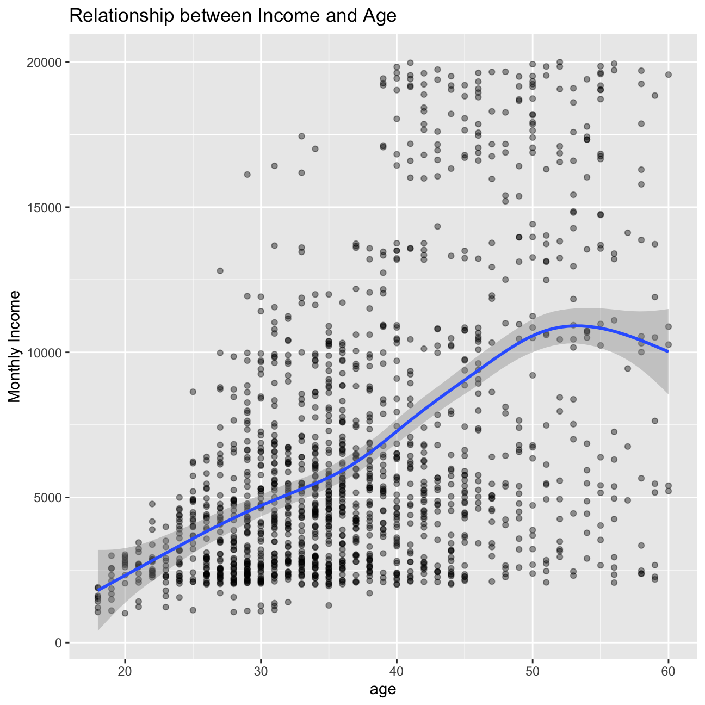

Exploratory data analysis
Attrition rate across departments
# creating variable
overalll_attrition <- hr_cleaned %>%
# grouping by attrition
group_by(attrition) %>%
# counting variable
summarise(count = n()) %>%
# adding a variable
mutate(overall_attrition = paste(round(count*100/sum(count),0),"%",sep="")) %>%
# filtering
filter(attrition=="Yes") %>%
# selecting overall attrition
select(overall_attrition)
hr_cleaned %>%
# grouping by variables
group_by(attrition, department) %>%
# counting by grouped variables
summarise(count=n()) %>%
# grouping by department
group_by(department) %>%
# adding a variable and rounding
mutate(attrition_rate=paste(round(count*100/sum(count),0),"%",sep="")) %>%
# filtering
filter(attrition=="Yes") %>%
# selecting certain variables
select(department, attrition_rate) %>%
# ungrouping previously grouped variables
ungroup() %>%
# adding an additional row with a variable
add_row(department = 'Overall' , attrition_rate = overalll_attrition[[1]]) ## # A tibble: 4 x 2
## department attrition_rate
## <chr> <chr>
## 1 Human Resources 19%
## 2 Research & Development 14%
## 3 Sales 21%
## 4 Overall 16%From the chart and table, we can find that the overall attrition is around 16%. This is in line with our previous analysis which indicated that around 20% employees felt dissatisfied with the environmental conditions.
Over 20% of Sales employees attrite, and Research & Development has minimum attrition. This data makes sense as Research & Development is a proprietary role and IBM must have put in place non-compete policies for such employees. On the other hand, sales is a highly competitive fast-paced role and thus high attrition is to be expected.
Besides, we think which kind of people leave also matters. If only low performers stay with IBM and all high achievers are leaving, this would be pretty bad. Thus, we have a look at attrition rate in combination with performance_rating.
ggplot(hr_cleaned, aes(x = attrition, fill = performance_rating)) +
# show performance rating proportion by attrition (with bars both at 100%)
geom_bar(position = "fill") +
labs(fill = "performance rating",
y = "proportion",
title = "Attrition and performance rating are independent",
subtitle = "Performance rating proportion by attrition")From the chart, we can see that the performance of people has no influence on attrition.
Distribution of age, years_at_company, monthly_income and years_since_last_promotion
Other important factors for a company are the distributions of age, years_at_company, monthly_income and years_since_last_promotion . Hence, we have a quick look at some summary statistics and the distribution.
#specifying x axis
ggplot(hr_cleaned,aes(x=age))+
#generating density plot
geom_density(fill="#8b9dc3")+
#facet by department
facet_wrap(~department) hr_cleaned %>%
#grouped by department
group_by(department) %>%
#calculating mean_age and rounded it to 0 decimal place
summarize(mean_age=round(mean(age),0),
#calculating median age
median_age = round(median(age),0)) ## # A tibble: 3 x 3
## department mean_age median_age
## <chr> <dbl> <dbl>
## 1 Human Resources 38 37
## 2 Research & Development 37 36
## 3 Sales 37 35The age of employees working in different departments seems to be normally distributed with a mean age of around 37 Yrs and median age of around 36 Yrs.
The bump to the right extreme of these curves represent perhaps the senior management age group as they are expected to have more experience.
#specifying x axes
ggplot(hr_cleaned,aes(x=years_at_company))+
#generating density plot
geom_density(fill="#8b9dc3") +
#adding x label
labs (x="Years at Company") +
#facet by department
facet_wrap(~department) hr_cleaned %>%
#grouped by department
group_by(department) %>%
#calculating mean_years_at_company and rounded it to 0 decimal place
summarize(mean_years_at_company=round(mean(years_at_company),0),
#calculating median years_at_company
median_years_at_company = round(median(years_at_company),0)) ## # A tibble: 3 x 3
## department mean_years_at_company median_years_at_company
## <chr> <dbl> <dbl>
## 1 Human Resources 7 5
## 2 Research & Development 7 5
## 3 Sales 7 6As for years at company, across departments the distribution seems to be very right skewed, suggesting most employees leave in around 15 years.
#specifying x axes
ggplot(hr_cleaned,aes(x=monthly_income)) +
#generating density plot
geom_density(fill="#8b9dc3") +
#adding x label
labs(x="Monthly Income")+
#facet by department
facet_wrap(~department) hr_cleaned %>%
#grouped by department
group_by(department) %>%
#calculating mean_monthly_income and rounded it to 0 decimal place
summarize(mean_monthly_income=round(mean(monthly_income),0),
#calculating median monthly_income
median_monthly_income = round(median(monthly_income),0)) ## # A tibble: 3 x 3
## department mean_monthly_income median_monthly_income
## <chr> <dbl> <dbl>
## 1 Human Resources 6655 3886
## 2 Research & Development 6281 4374
## 3 Sales 6959 5754For each department, monthly income is right skewed with average monthly income of Research & Development being on higher side - given the nature of their job role and the experience required. Most of the Sales people draw around USD 5,500 - 6,000 monthly. Human Resources seems to be earning the least on a relative scale.
#specifying x axes
ggplot(hr_cleaned,aes(x=years_since_last_promotion))+
#generating density plot
geom_density(fill="#8b9dc3") +
#adding x label
labs(x="Years Since Last Promotion")+
#facet by department
facet_wrap(~department) 
hr_cleaned %>%
#grouped by department
group_by(department) %>%
#calculating mean_years_since_last_promotion and rounded it to 0 decimal place
summarize(mean_years_since_last_promotion=round(mean(years_since_last_promotion),0),
#calculating median years_since_last_promotion
median_years_since_last_promotion = round(median(years_since_last_promotion),0)) ## # A tibble: 3 x 3
## department mean_years_since_last_prom… median_years_since_last_prom…
## <chr> <dbl> <dbl>
## 1 Human Resources 2 1
## 2 Research & Developm… 2 1
## 3 Sales 2 1Distribution of years since last promoted indicates that Human Resources and Sales employees spend more time between promotions than those in Research & Development.
Distribution of job_satisfaction and work_life_balance
We now want to analyse job_satisfaction and work_life_balance. First, we have a look at the mere numbers.
ggplot(hr_cleaned, aes(x = factor(job_satisfaction, levels = c("Low", "Medium", "High", "Very High")))) +
geom_bar(aes(y = stat(prop), group = 1)) +
scale_y_continuous(labels = scales::percent) +
labs(x = "Job Satisfaction",
title = "Proportion of People by Job Satisfaction")hr_cleaned %>%
group_by(job_satisfaction) %>%
summarise(n = n()) %>%
# calculate proportion of people by job satisfaction level
mutate(proportion = n / sum(n)) %>%
# reorder job satisfaction levels properly
arrange(desc(factor(job_satisfaction, levels = c("Low", "Medium", "High", "Very High")))) ## # A tibble: 4 x 3
## job_satisfaction n proportion
## <chr> <int> <dbl>
## 1 Very High 459 0.312
## 2 High 442 0.301
## 3 Medium 280 0.190
## 4 Low 289 0.197ggplot(hr_cleaned, aes(x = factor(work_life_balance, levels = c("Bad", "Good", "Better", "Best")))) +
# do not show absolute counts but the proportion in percent (stat(prop))
geom_bar(aes(y = stat(prop), group = 1)) +
# show y values as percentages
scale_y_continuous(labels = scales::percent) +
labs(x = "Work-life-balance",
title = "Proportion of People by Work-life-balance")hr_cleaned %>%
group_by(work_life_balance) %>%
summarise(n = n()) %>%
# calculate proportion of people by work life balance level
mutate(proportion = n / sum(n)) %>%
# reorder work life balance levels properly
arrange(desc(factor(work_life_balance, levels = c("Bad", "Good", "Better", "Best")))) ## # A tibble: 4 x 3
## work_life_balance n proportion
## <chr> <int> <dbl>
## 1 Best 153 0.104
## 2 Better 893 0.607
## 3 Good 344 0.234
## 4 Bad 80 0.0544We can see that over 60% people are highly satisfied with their job. Furthermore, only around 5% of people have a bad work-life-balance.
Then, we investigate the relationship between those two variables.
# order job satisfactioon properly
ggplot(hr_cleaned, aes(x = factor(job_satisfaction, levels = c("Low", "Medium", "High", "Very High")),
# order w-l-b properly
fill = factor(work_life_balance, levels = c("Best", "Better", "Good", "Bad")))) +
geom_bar(position = "fill") +
labs(fill = "work life balance",
y = "proportion",
title = "Relationship between Job Satisfaction and Work Life Balance",
subtitle = "Work life balance proportion by job satisfaction",
x = "Job Satisfaction")Tt seems like there is no apparent relationship between work-life-balance and job satisfaction!
Relationship between monthly income and education
# show density, not counts (stat(density))
ggplot(hr_cleaned, mapping = aes(x = monthly_income, y = stat(density))) +
geom_freqpoly(mapping = aes(colour = education)) +
labs(x = "monthly income",
title = "Monthly Income Distribution by Education") +
# order facets properly
facet_wrap(~factor(education, levels = c("Below College", "College", "Bachelor", "Master", "Doctor"))) +
# use a nice theme
theme_gdocs() ggplot(hr_cleaned, aes(y = factor(education, levels = c("Below College", "College", "Bachelor", "Master", "Doctor")),
x = monthly_income)) +
geom_boxplot() +
labs(x = "Monthly Income",
y = "Education",
title = "Monthly Income Boxplots by Education")In the boxplot above, we can see that the median monthly income is higher with higher education, with the exemption of a lower median monthly income for a Bachelor education as opposed to College education.
Then we look at average monthly income by education level.
avg_income_by_edu <- hr_cleaned %>%
group_by(education) %>%
# compute average monthly income by education level
summarise(mean = mean(monthly_income))
# order education levels properly
ggplot(avg_income_by_edu, aes(x = factor(education, levels = c("Below College", "College", "Bachelor", "Master", "Doctor")),
y = mean)) +
geom_col() +
labs(x = "Education Level",
y = "Average Monthly Income",
title = "Higher Education Means Higher Average Income!")It also shows a tendency for higher education yielding higher average monthly incomes.
Relationship between monthly income and gender
# show density, not counts (stat(density))
ggplot(hr_cleaned, mapping = aes(x = monthly_income, y = stat(density))) +
geom_freqpoly(mapping = aes(colour = gender)) +
labs(x = "Monthly Income",
title = "Monthly Income Distribution by Gender") +
facet_wrap(~gender)ggplot(hr_cleaned, aes(y = gender,
x = monthly_income)) +
geom_boxplot() +
labs(x = "Monthly Income",
y = "Gender",
title = "Monthly Income Boxplots by Gender")Although it is expected to have a gender pay gap, it seems like women are better off than men at IBM.
Relationship between income and job role
ggplot(hr_cleaned, aes(y = reorder(job_role, monthly_income), x = monthly_income)) + # order by monthly income
geom_boxplot() +
labs(x = "Monthly Income",
y = "Job Role",
title = "Monthly Income Boxplots by Job Role")As it seems, managers and research directors are the highest paid at IBM. And Sales representatives are least well paid.
Then we brings the effect of age given the job role.
ggplot(hr_cleaned, aes(x = age, y = monthly_income)) +
# set opacity of points
geom_point(alpha = 0.4) +
# one scatterplot for each job role
facet_wrap(~job_role) +
labs(y = "Monthly Income",
title = "Effect of Age on Monthly Income Given the Job Role")Even though the effect of age on monthly income is not too apparent when faceting on job role, we also have to consider that one usually takes on other roles throughout a career.
Relationship betwwen income and age
ggplot(hr_cleaned, aes(x = age, y = monthly_income)) +
# set opacity of points
geom_point(alpha = 0.4) +
geom_smooth() +
labs(y = "Monthly Income",
title = "Relationship between Income and Age")
This is actually something that seems to be intuitive for most people: higher income with higher age, as staying with the same company for a long time means, you have gone through some tough times together, and therefore had some paycheck increases over the years.